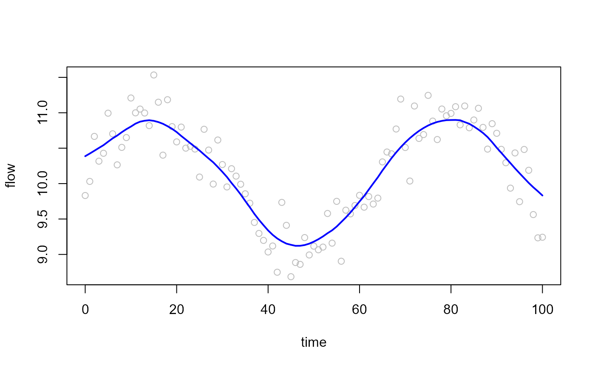

Estimate smoothed signals and derivatives
estimate_derivatives.RdApplies Gaussian kernel smoothing to a time series and estimates its first and second derivatives using finite differences. The resulting smoothed signal and derivatives can be used for event detection and hydrological state classification with functions such as [update_state_no_forecast()] and [run_state_machine()].
Arguments
- time
A numeric or POSIXct vector of observation times.
- y
Numeric vector containing the variable to be smoothed (for example, discharge, concentration, or turbidity).
- kernel_l
Numeric. Bandwidth of the Gaussian smoothing kernel. Larger values produce smoother estimates.
- time_units
Character string specifying the units used when converting POSIXct values to elapsed time. One of:
"auto","secs","mins","hours","days", or"weeks".- derivative_units
Character string specifying the units of the returned derivatives. One of:
"per_second"Return derivatives per second.
"per_minute"Return derivatives per minute.
Value
A list with four components:
- time_numeric
Numeric representation of the input time vector.
- x
Kernel-smoothed signal.
- dx
First derivative of the smoothed signal.
- ddx
Second derivative of the smoothed signal.
Details
The function first smooths the input signal using a Gaussian kernel with bandwidth specified by `kernel_l`. It then calculates:
the smoothed signal (\(x\)),
the first derivative (\(dx/dt\)),
the second derivative (\(d^2x/dt^2\)).
Time may be supplied as either a numeric vector or a POSIXct time series. For POSIXct inputs, elapsed time is calculated relative to the first observation.
A Gaussian kernel smoother is applied locally around each observation. First and second derivatives are then estimated from the smoothed series using finite differences. Smoothing prior to differentiation reduces the influence of measurement noise on derivative estimates.
In hydrological applications, the derivatives can be used to identify:
event onset through increasing flow (
dx > 0),rising inflection points (
ddx > 0),peak flow conditions (
dx ≈ 0),recession dynamics (
ddx < 0).
References
Wong, B. P., and Kerkez, B. Adaptive sampling methods for high-frequency environmental monitoring.
Examples
set.seed(123)
time <- seq(0, 100, by = 1)
flow <- 10 + sin(time / 10) + rnorm(length(time), sd = 0.3)
est <- estimate_derivatives(
time = time,
y = flow,
kernel_l = 5
)
plot(time, flow, col = "grey")
lines(time, est$x, col = "blue", lwd = 2)

head(est$dx)
#> [1] NA 0.03756113 0.03934459 0.03995859 0.03894693 0.04863183
head(est$ddx)
#> [1] NA NA 0.0017834627 0.0006139958 -0.0010116609
#> [6] 0.0096849051